(Note) For the enforcement of this rule, the following guidelines shall apply.
A bench minor penalty shall be assessed for actions that occur on or in the immediate vicinity of the player’s bench (off the ice).
A minor penalty or misconduct penalty should be assessed for actions that occur on the playing surface or in the penalty bench area.
(a) A minor penalty for unsportsmanlike conduct shall be assessed to any player who commits the following actions:
- Challenges or disputes the rulings of any official.
- Taunts or incites an opponent.
- Creates a disturbance during the game.
- Shoots the puck after the whistle, if in the opinion of the Official such shot was avoidable.
A misconduct penalty shall be assessed to any player who persists in such conduct and any further dispute by the same player shall result in a game misconduct penalty being assessed.
(Note) If occurring after the game, the above actions shall be initially penalized as a misconduct penalty.
(b) A bench minor penalty shall be assessed to any team who’s players or team officials commit the following actions while on the player’s bench:
- Unsportsmanlike conduct or disputing the rulings of any official by an unidentified player or Team Official.
- Using obscene, profane or abusive language to any person.
- Using the name of any official in a loud or abusive manner.
- Throwing any object onto the playing area during the progress of the game or during a stoppage of play.
- Banging the boards with a stick or other object at anytime.
- Using threatening or abusive language or gestures directed at an opponent.
- Interfering in any non-physical manner with any game official, including off-ice officials, in the performance of their duties.
(Note) If any of the above actions are committed by a player who is on the players’ bench and is readily identifiable, they shall be assessed a misconduct penalty under sub-section (c) of this rule.
(c) A misconduct penalty shall be assessed to any player who commits the following actions:
- Persists in any conduct where they were previously assessed a minor penalty for unsportsmanlike conduct.
- Using obscene, profane or abusive language to any person anywhere in the rink before, during or after the game.
- Intentionally knocking or shooting the puck out of the reach of an official who is retrieving it during a stoppage of play.
- Not proceeding directly and immediately to the penalty bench or to the dressing room, after being penalized and ordered to do so by the officials (equipment shall be delivered to him by a teammate, if necessary).
- Entering or remaining in the Referee’s Crease, unless invited to do so.
- Interfering in any non-physical manner with any Game Official including the Referee, Linesman, Timekeepers or Goal Judges in the performance of their duties.
(d) A misconduct or game misconduct, at the discretion of the Referee and based on severity, shall be assessed to any player who commits the following actions:
- Touches or holds any official with his hand or stick.
- Attempts to continue an altercation after been ordered to stop, or resists the linesman in stopping the altercation.
- Intentionally bangs the boards or protective glass or goal frame with his stick or any other object at anytime. If done in protest of an officials’ decision, an additional minor penalty for unsportsmanlike conduct shall also be assessed.
(e) A game misconduct penalty shall be assessed to any player or team official who is guilty of the following actions:
- Persists in any course of conduct for which he has previously been assessed a misconduct penalty (player) or bench minor penalty assessed to the team (Team Official).
- Uses an obscene gesture anywhere in the rink before, during or after the game.
- Uses language that is offensive, hateful or discriminatory in nature anywhere in the rink before, during or after the game.
- Interferes in any physical manner with any game official, including off-ice officials, in performing their duties.
- A player who receives their second misconduct penalty (for any rule infraction) during the same game shall be assessed a game misconduct penalty in lieu of the second misconduct penalty.
(f) A match penalty shall be assessed to any player or team official who commits the following actions:
- Deliberately inflicting physical harm, or attempting todo so, to any game official, including off-ice officials.
(Note) Any match penalty assessed under this rule must be reported via written game report by the officials to the USA Hockey District Referee-in-Chiefwithin 48 hours.
- Deliberately injuring, or attempting to do so, any opposing player or team official.
- Behaving in any manner that is critically detrimental to the conducting of the game, including spitting at an opponent, spectator, game or team official, or verbally threatening a Game Official, opposing Team Official or opposing player with physical harm.
(g) The use of tobacco products or alcoholic beverages by any player or team official is prohibited in the rink area, including the bench areas and off-ice official area. A warning shall be issued by the Referee for the first offense by any participant and any subsequent violations by the same team shall result in a bench minor penalty being assessed.
(a) A match penalty shall be assessed to any player or team official who deliberately injures or attempts to injure any opposing player or team official.
In all cases when a match penalty is assessed, a game report shall be filed with the proper authorities for further disciplinary action.
(Note) All incidents of attempt to injure/deliberate injury of game officials should be penalized under Rule 601(f.1).
(Note) Boarding is the action where a player pushes, trips or body checks an opponent causing them to go dangerously into the boards. This includes: Accelerating through the check to a player who is in a vulnerable position, driving an opponent excessively into the boards with no focus on or intent to play the puck, or any check delivered for the purpose of punishment or intimidation that causes the opponent to go unnecessarily and excessively into the boards.
The onus is on the player delivering the check to avoid placing a vulnerable or defenseless opponent in danger.
(a) A minor plus a misconduct or major plus game misconduct penalty shall be assessed for boarding an opponent.
“Rolling” an opponent along the boards where he is attempting to go through too small an opening is not considered boarding.
(b) A major penalty plus game misconduct penalty shall be assessed to any player who injures an opponent as a result of boarding.
(c) A match penalty for attempt to injure or deliberate injury to an opponent may also be assessed for boarding.
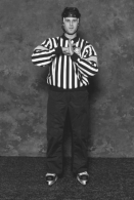(Note 1) For the purpose of this rule, an illegal body check is defined as when a player makes a deliberate physical contact with the opponent using overt hip, shoulder, arm or torso action. This includes physically impeding the opponent's progress for the purpose of physically forcing the opponent off the puck and with no effort to legally play the puck.
(Note 2) For the purpose of this rule, USA Hockey has identified two different categories of play. They are Body Contact (where Body Checking is prohibited) and Body Checking (where a legal body check is permissable). Please refer to the Glossary for specific definitions of Body Contact and a Body Check.
(a) Body checking is prohibited in the 12 & under youth age classification and below and all Girls’/Women’s age classifications. These levels would be considered the Body Contact Category of play.
Body checking is also prohibited in all non-check Adult classifications.
(b) Anytime a team from a Body Contact category (see sub-section (a) above) plays a team from a Body Checking category, checking shall be prohibited under this rule.
(c) A minor or major penalty shall be assessed to a player who body checks an opponent in a Body Contact category or non-check Adult classification.
(Note) Body Contact hockey does not mean “no contact.” There will be legal body contact (see Glossary) within the rules in Body Contact categories. Legal body contact shall not be penalized under this rule. However, deliberate physical contact with an opponent, with no effort to legally play the puck, shall be penalized.
(d) A major plus a game misconduct penalty shall be assessed to any player who injures an opponent with a body check in a Body Contact category or non-check Adult classification.
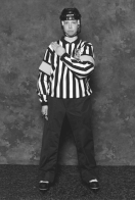(Note) A broken stick is one that, in the opinion of the Referee, is unfit for normal play.
(a) Any player whose stick is broken must drop his stick prior to participating in the play. A player or goalkeeper shall be allowed reasonable time to be aware that the stick is broken. A minor penalty for an equipment violation shall be assessed for participating in play with a broken stick.
(b) A replacement stick for any player who is no longer in possession of a stick may only be obtained from the player’s bench or from a teammate on the ice. A minor penalty for an equipment violation shall be assessed to a player who receives a replacement stick illegally, unless the team is assessed a bench minor penalty under Rule 601(b.4) Throwing Articles into the Playing Area. In this instance, the player receiving the thrown stick shall not be penalized.
(c) A goalkeeper whose stick is broken may not go to the players’ bench for a replacement during a stoppage of play, but must receive his stick from a teammate. For an infraction of this rule a minor penalty for delay of game shall be assessed to the goalkeeper.
(Note) Butt-Ending is the action whereby a player uses the shaft of the stick, above the upper hand, to check an opposing player in any manner or jabs or attempts to jab an opposing player with this part of the stick.
(a) A major plus a game misconduct penalty shall be assessed to any player who “butt-ends” or attempts to “butt-end” an opponent.
An attempt to “butt-end” shall include all cases where a “butt-end” gesture is made regardless of whether body contact is made or not.
(b) A match penalty for attempt to injure or deliberate injury to an opponent may also be assessed for butt-ending.
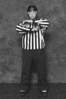(Note) Charging is the action where a player takes more than two strides or travels an excessive distance to accelerate through a body check for the purpose of punishing the opponent. This includes skating or leaving one's feet (jumping) into the opponent to deliver a check, accelerating through a check for the purpose of punishing the opponent, or skating a great distance for the purpose of delivering a check with excessive force.
(a) A minor plus a misconduct or a major plus a game misconduct penalty shall be assessed for charging an opponent.
(b) A major penalty plus game misconduct penalty shall be assessed to any player who injures an opponent as a result of charging.
(c) A minor plus a misconduct or a major plus a game misconduct penalty shall be assessed to a player who body checks or charges a goalkeeper while the goalkeeper is within his goal crease or privileged area.
(d) A goalkeeper is NOT “fair game” because he is outside his privileged area. A penalty for interference or charging should be called in every case where an opposing player makes unnecessary contact with a goalkeeper. Likewise, Referees should be alert to penalize goalkeepers for any infractions they commit in the vicinity of the goal.
(Note 1) For the purpose of this rule, any accidental or unavoidable contact that occurs with the goalkeeper shall be penalized under the Interference rule. Any deliberate body contact or check that is delivered to the goalkeeper shall be penalized as Charging.
(Note 2) The goalkeeper’s “Privileged Area” is an area outlined by connecting the end zone face-off spots with an imaginary line and imaginary lines from each face-off spot running perpendicular to the end boards.
(e) A match penalty for attempt to injure or deliberate injury to an opponent may also be assessed for Charging.
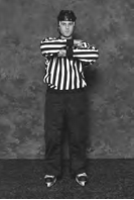(Note) Checking from Behind occurs when a check is delivered to a player directly from behind, or diagonally from behind. The onus is on the player delivering the check to not hit from behind. This includes body checking or pushing an opponent from behind in open ice or directly into the boards or goal frame.
(a) A minor plus a misconduct penalty, or a major plus a game misconduct penalty, shall be assessed for checking from behind.
(b) A major penalty plus game misconduct penalty shall be assessed to any player who injures an opponent, or causes them to go head first into the boards or goal frame, as a result of checking from behind.
(c) A match penalty shall be assessed for checking from behind in all instances when a player clearly checks an opponent from behind with excessive force while the opponent is in a vulnerable or defenseless position or the action was deemed to be a deliberate attempt to injure an opponent.
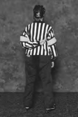(Note) Cross-checking is the action of using the shaft of the stick between the two hands to forcefully check an opponent with no portion of the stick on the ice.
(a) A minor or a major penalty shall be assessed for cross-checking an opponent.
(b) A major plus a game misconduct penalty shall be assessed to any player who injures an opponent as a result of cross-checking.
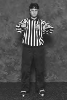(a) A minor penalty shall be assessed to any player or goalkeeper who deliberately freezes the puck along the boards or goal frame for the purpose of delaying the game.
(b) A minor penalty shall be assessed to a goalkeeper who has an opportunity to play the puck prior to being pressured by an attacking player, but instead intentionally causes a stoppage of play.
(c) A minor penalty shall be assessed to any player or goalkeeper who delays the game by deliberately shooting or batting the puck outside the playing area, including after a stoppage of play.
(d) A minor penalty shall be assessed to a goalkeeper who shoots the puck directly (non-deflected) outside of the playing area, except when the puck inadvertently leaves the playing area in a location that is not protected by glass or screen.
(e) Play shall be stopped immediately when the goal frame has been displaced from its normal position. A minor penalty shall be assessed to any player (including a goalkeeper) who deliberately displaces the goal frame.
If the defending team deliberately displaces the goal frame during a breakaway (see Glossary) or deprives the attacking team of an immediate scoring opportunity, a penalty shot/optional minor penalty shall be awarded to the player in possession of the puck.
If the goal frame is deliberately displaced in the last two minutes of the game or anytime in overtime, a penalty shot/optional minor penalty shall be assessed.
If a player on the defending team deliberately displaces the goalpost when the goalkeeper has been removed, if in the opinion of the Referee, the puck would have entered the goal – thereby preventing an obvious and imminent goal – a goal shall be awarded in lieu of the penalty shot.
(f) If a goalkeeper (all classifications) or player (excluding Adults) deliberately removes their helmet/facemask during a breakaway (see Glossary), a penalty shot/optional minor penalty shall be awarded.
If a goalkeeper (all classifications) or player (excluding Adults) deliberately removes their helmet/facemask during the last two minutes of the game or anytime during overtime, a penalty shot/optional minor penalty shall be assessed.
(g) A minor penalty for delay of game shall be assessed to a goalkeeper who drops the puck into his pads or onto the goal net or deliberately piles up snow or obstacles near the goal that, in the opinion of the Referee, could prevent the scoring of a goal
(h) A bench minor penalty shall be assessed to any team, after warning by the Referee, that fails to place the correct number of players on the ice and commences play or that causes any delay by making additional substitutions or attempts to delay the game in any manner.
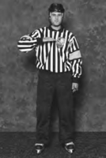(Note) Elbowing is the use of an extended elbow as the point of contact with an opponent while delivering a check, or as a means to create separation with an opponent, and may include an attempted elbow.
(a) A minor or a major penalty shall be assessed for elbowing or an attempt to elbow an opponent.
(b) A major plus a game misconduct penalty shall be assessed to any player who injures an opponent as the result of a foul committed by elbowing.
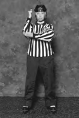(a) A minor penalty for delay of game shall be assessed to a player other than the goalkeeper who deliberately falls on or gathers the puck into his body, deeming the puck unplayable and causing a stoppage of play.
(Note) Any player who drops to his knees to block a shot should not be penalized if the puck is shot under him or becomes lodged in his clothing or equipment, but the use of hands to make the puck unplayable should be penalized promptly.
(b) A penalty shot/optional minor penalty shall be assessed to the non-offending team when any player, except the goalkeeper, falls on the puck, gathers the puck into his body or uses the hands to hold the puck while in the goal crease. For application of this rule, the decision as to whether the puck is in the crease is made at the moment the infraction occurs.
A goal shall be awarded to the non-offending team if the goalkeeper has been removed from the ice at the time of the infraction and the action under this rule has prevented an obvious and imminent goal.
(c) A minor penalty for delay of game shall be assessed to a goalkeeper who falls on or gathers the puck into his body and causes a stoppage of play when:
- The puck is behind the goal line and his body is entirely outside of the goal crease.
- He fails to play the puck with his stick when provided the opportunity to do so prior to being pressured by an attacking player.
- The puck is outside the boundaries of the ”goalkeeper’s privileged” area.
- He holds or places the puck against any part of the goal frame or boards or intentionally drops the puck on the back of the netting.
(Note) The goalkeeper’s “Privileged Area” is an area outlined by connecting the end zone face-off spots with an imaginary line and imaginary lines from each face-off spot running perpendicular to the end boards.
(Note) A punch, or an attempted punch, thrown by any player in the direction of an opponent, regardless as to whether contact is made, is considered fighting.
(a) A major plus a game misconduct penalty shall be assessed to any player who engages in fighting. An additional minor penalty shall be assessed to any player who starts or instigates fighting.
A minor penalty shall be assessed to any player who drops his stick and/or removes his glove(s) during an altercation and is not a participant in the original altercation. A game misconduct penalty shall be added if, in the judgment of the Referee, such player is deemed to be the instigator of a subsequent altercation.
A minor, double minor or major plus game misconduct penalty, at the discretion of the Referee, shall be assessed to any player who, having been struck, continues the altercation by retaliating. A player who does not retaliate after being struck shall not be assessed a penalty for fighting under this rule.
(Note) The Referee is provided very wide latitude in the penalties that he may impose under the rules, including Rule 601 “Abuse of Officials and Other Misconduct” in an effort to discourage fighting. This is done intentionally to enable the Referee to differentiate between the obvious degrees of responsibility of the participants either for starting the fighting or persisting in continuing the fighting.
(b) A major plus game misconduct penalty shall be assessed to any player involved in fighting off the playing surface, before, during or after the game.
(c) A match penalty (for all age classifications) shall be assessed to any player who deliberately removes his helmet/facemask prior to an altercation.
A match penalty (for all age classifications) shall be assessed to any player who deliberately removes his opponent's helmet/facemask prior to or during an altercation.
A game misconduct penalty (for all age classifications) shall be assessed to any player whose actions during an altercation causes the removal of an opponent's helmet and facemask. The player or goalkeeper shall be suspended for his team's next two scheduled games. This two-game suspension is in addition to any other required suspensions incurred during the same incident.
A game misconduct penalty (for all age classifications) shall be assessed to any player who doesn't wear his helmet/facemask as designed and the helmet/facemask is removed during an altercation.
(d) A game misconduct penalty shall be assessed to any player or goalkeeper who is the first to intervene in an altercation then in progress. This penalty is in addition to any other penalty incurred in the same incident.
(e) A minor penalty shall be assessed to any player who fails to move immediately and directly to their players’ bench (or goal crease for a goalkeeper) when instructed to do so by the Referee during an altercation.
(f) Any player who receives a second major penalty for fighting with the same team during the same season shall receive a three-game suspension. For a third fighting major with the same team in the same season, the player shall be suspended until a hearing is conducted by the proper authorities under Rule 410 Supplementary Discipline.
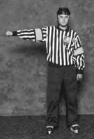(Note 1) For the purpose of this rule, fouled from behind is defined as any infraction committed to an opponent either directly or diagonally from behind (beyond the fouled player's peripheral vision), that would normally be deemed a penalty, including cross-checking, high sticking, holding, hooking, slashing and tripping.
(Note 2) For the purpose of this rule a "breakaway" is defined as a player who is in control of and is propelling the puck in a desired direction, and is beyond his defending blue line with no opponent between him and the goalkeeper.
(a) A penalty shot/optional minor penalty shall be awarded to the non-offending team anytime a player is fouled from behind, or diagonally from behind by an opponent, and is denied a reasonable scoring opportunity during a breakaway.
(Note) The intent of this rule is to restore a reasonable scoring opportunity that has been lost by reason of a foul committed from behind during a breakaway situation. This penalty shall be assessed in the normal manner allowing for a “delayed penalty” and a change of possession prior to stopping play.
(b) If the opposing goalkeeper has been removed from the ice and an obvious and imminent goal has been prevented by the fouled from behind provisions, then the Referee shall stop play and award a goal to the non-offending team.
(a) Play shall be stopped and a last play face-off shall occur anytime a player (except the goalkeeper) closes his hand on the puck and does not immediately drop the puck to the ice.
A minor penalty for delay of game shall be assessed to any player, other than the goalkeeper, who picks the puck up from the ice with his hand(s) while play is in progress.
A penalty shot/optional minor penalty shall be awarded to the non-offending team anytime a defending player, other than the goalkeeper, picks the puck up off the ice with his hand or holds the puck while play is in progress and the puck is in the goal crease. If this infraction occurs while the goalkeeper has been removed from the ice and prevents and obvious and imminent goal, a goal shall be awarded to the non-offending team.
(b) A player or goalkeeper shall not be allowed to “bat” the puck in the air, or push it along the ice with his hand, directly to a teammate unless the “hand pass” has been initiated and completed in his defending zone, in which case play shall be allowed to continue. If the “hand pass” occurs in the neutral or attacking zone, a stoppage of play will occur and a face-off will take place according to last play face-off rules provided no territorial advantage has been gained.
No goal can be scored as a result of the puck being propelled by the hand of an attacking player regardless if the puck enters the goal directly from the hand or deflects off of any player prior to entering the goal.
(c) Play shall be stopped and an end zone face-off taken when a goalkeeper holds the puck for more than three seconds while being pressured. If not pressured, after a warning by the Referee, a goalkeeper shall be assessed a minor penalty for delay of game.
If a goalkeeper catches the puck and throws it forward towards his opponent’s goal and it is first played by a teammate, play shall be stopped and the ensuing face-off shall be held at the nearest end face-off spot of the offending team.
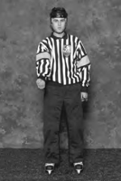(Note) Head-Butting shall be defined as the physical use of one's head in the course of delivering a body check (head first) in the chest, head, neck or back area or the physical use of the head to strike an opponent.
(a) A major plus a game misconduct penalty shall be assessed for head-butting an opponent.
(b) A match penalty for attempt to injure or deliberate injury to an opponent may also be assessed for head-butting.
(Note) Head Contact is the action of a player contacting an opponent in the head, face or neck with any part of the player's body, equipment or stick.
(a) A minor plus a misconduct or major plus a game misconduct penalty shall be assessed for head contact to an opponent.
(b) A major plus a game misconduct penalty shall be assessed to any player who injures an opponent as a result of head contact or who intentionally or recklessly contacts an opponent in the head, face or neck.
(c) A match penalty for attempt to injure or deliberate injury to an opponent may also be assessed for head contact.
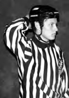(Note) High Sticking is the action where a player carries the stick above the normal height of the opponent's shoulders and makes contact with the opponent. A player must be accountable for being in control of their stick at all times.
(a) A minor or major penalty shall be assessed for high sticking an opponent.
(b) A major plus a game misconduct penalty shall be assessed to any player who injures an opponent as a result of high sticking.
(c) Batting the puck above the normal height of the shoulder with the stick is prohibited and no goal can be scored as a result of an attacking player playing the puck above the shoulder with the stick and directly entering the goal.
When the puck is played above the height of the shoulders with the stick, play shall be immediately stopped and a face-off conducted at one of the end zone face-off spots in the defending zone of the offending team unless:
- The puck is batted to an opponent who gains possession and control of the puck, in which case play shall continue, or
- A player of the defending team bats the puck into their own goal, in which case the goal is allowed.
(d) The use of the “slap shot” in the Youth and Girls’ 10 & under age classifications and below is prohibited. When a player who, in the process of making a forehand or backhand shot or pass, raises the blade of the stick above his waist as part of the backswing, play shall be stopped immediately and a face-off is conducted at one of the end zone face-off spots of the offending team.
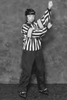(a) A minor penalty shall be assessed for holding an opponent.
(b) A major plus a game misconduct penalty shall be assessed to a player who uses his hand to rub, grab or hold the facemask of an opponent.
(c) A match penalty for attempt to injure or deliberate injury to an opponent may also be assessed for grabbing or holding the facemask.
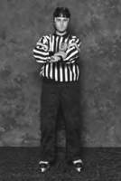(Note) For the purpose of this rule, the center line shall divide the rink in half and the point of last contact with the puck shall be used to determine whether a potential icing exists. “Icing the puck shall have been completed the instant the puck has completely crossed the goal line.
(a) When a player of a team shoots, bats with the hand or stick or deflects the puck from his own half of the ice completely beyond the goal line of the opposing team, play shall be stopped and a face-off shall take place at an end zone face-off spot in the defending zone of the offending team.
(Note) If a team ices the puck during a delayed whistle as a result of a foul committed by the opposing team, the ensuing face-off shall take place at a neutral zone face-off spot nearest the defending zone of the team icing the puck.
However, if the puck has entered the goal as a result of a legal action by the team shooting the puck, the goal shall be allowed.
(b) Icing shall be nullified if any of the following conditions have been met:
- (For Adults [male and female], High School and Youth/Girls' 16 and Under age classifications and above only) The offending team is shorthanded (below the on-ice numerical strength of their opponent) when the puck is shot. The determination is made at the time the penalty expires and if the puck was shot prior to the penalty time expiration, regardless as to the position of the penalized player, no icing shall be called.
- The puck is shot by an attacking player and rebounds off of the body or the stick of a defending player on their defensive half of the center red line.
- The puck travels the length of the ice as a result of either player participating in a face-off.
- The puck touches any part, including stick, skates or body, of an opposing player prior to crossing the goal line.
- If, in the opinion of the Linesman, an opposing player – except the goalkeeper – has an opportunity to play the puck, and has not done so, prior to the puck crossing the goal line.
(c) If the Officials shall have erred in calling an “icing the puck” infraction (regardless of whether either team is shorthanded) a face-off shall occur at the end zone face-off spot nearest to the location of the puck when play was stopped.
(d) Any unnecessary contact with an opponent who is attempting to play the puck in an obvious icing situation shall be penalized strictly as boarding, charging or roughing
(Note) Interference is defined as when a player uses his body ("pick" or "block") to impede the progress of an opponent (non-puck carrier) with no effort to play the puck, maintain normal foot speed or maintain an established skating lane.
(a) A minor penalty shall be assessed for interference. This includes the following actions which shall be penalized under this rule:
- Providing a protective screen and limiting the opportunity for an opposing player to apply pressure to a teammate in possession and control of the puck.
- Making no attempt to play the puck while facing-off and instead plays the body of the opponent.
- An attacking player who no longer has possession and control of the puck initiates contact with the defending player in an effort to obstruct their ability to play the puck or an opponent.
- A defending player who changes his skating lane or foot speed in an effort to play the body of an opponent who is no longer in possession and control of the puck.
- Deliberately knocking the stick out of an opponent’s hand.
- Preventing an opponent who has dropped his stick or any other piece of equipment from retrieving it.
- Shooting, throwing or directing any object (equipment, broken stick, etc.) that may be on the ice in the direction of an opponent in an attempt to distract him.
- Any player who makes physical contact, using his stick or body, in a manner that interferes with the movement of the goalkeeper, unless otherwise specified in the rules
- Any player on the players’ or penalty bench who interferes, in any manner, with the movement of the puck or any opponent on the ice while play is in progress.
(b) A face-off shall be conducted at the nearest neutral zone face-off spot anytime an attacking player stands, holds his stick, or skates through the goal crease provided the puck is in the attacking zone, the attacking team has possession of the puck and the goalkeeper is in contact with the crease.
No goal may be scored with an attacking player in the goal crease unless the puck has preceded the player(s) into the goal crease or the goalkeeper is out of the goal crease area.
However, if the attacking player has been physically interfered with by the actions of a defending player that causes him to be in the goal crease, play shall not be stopped and any legal goal scored shall be allowed.
(Note) The goal crease area shall include all the space outlined by the semi-circular crease lines (including crease lines) and extending vertically to the level of the top of the goal frame.
(c) A minor penalty shall be assessed to a goalkeeper who intentionally leaves his stick, or any portion of his stick, in front of the goal.
A goal shall be awarded to the non-offending team if the puck shall hit the stick and prevent an obvious and imminent goal, regardless as to whether the goalkeeper is on the ice, in the act of leaving the ice or off the ice.
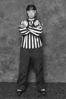(a) Play shall be stopped and a last play face-off will occur if any objects are thrown onto the ice that interferes with the progress of the game.
(b) Play shall be stopped and a last play face-off will occur anytime a player is being physically interfered with by a spectator, unless his team is in possession of the puck in which case play shall be stopped upon completion of the play.
(c) A game misconduct penalty for unsportsmanlike conduct shall be assessed to any player who physically interferes with a spectator.
(Note) The Referee shall report all incidents pertaining to this rule to the Proper Authorities who shall have full power to take further disciplinary action as deemed appropriate.
(Note 1) Kicking is the action of a player deliberately using his skate(s) with a kicking motion to propel the puck or to contact an opponent.
(Note 2) A "push-off" with the skate is defined as the action where a player uses their skate(s) in a non-kicking motion to make contact with the opponent.
(a) A major plus a game misconduct penalty shall be assessed to any player or goalkeeper who uses their skate to “push off” an opponent.
(b) A match penalty shall be assessed to any player or goalkeeper who kicks, attempts to kick or injures an opponent by kicking.
(c) Kicking the puck shall be permitted provided the puck is not kicked by an attacking player and entered the goal either directly or after deflecting off any player including the goalkeeper.
However, the puck may not be played by the so called "kick shot," which combines the use of the leg and foot driving the shaft and blade of the stick and producing a very dangerous shot.
(Note) Kneeing is the act of a player leading with or extending their knee outwards for the purpose of making contact, or attempting to do so, with the opponent.
(a) A minor or a major penalty shall be assessed for kneeing an opponent.
(b) A major plus a game misconduct penalty shall be assessed to any player who injures an opponent as the result of a kneeing.
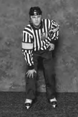(Note) Slashing is the act of a player swinging his stick at an opponent, whether contact is made, or not. Any forceful chop with the stick on an opponent's body or opponent's stick, on or near the opponent's hands, shall be considered slashing.
(a) A minor or a major penalty shall be assessed for slashing an opponent.
(b) A major plus a game misconduct penalty shall be assessed to any player who injures an opponent as a result of slashing.
(Note) Referees are instructed to penalize any player who swings his stick at any opposing player (whether or not contact is made) or makes a wild swing at the puck with the intention of intimidating the opponent.
(c) Any player who swings his stick at another player in the course of an altercation shall be assessed a game misconduct (plus any additional penalty outlined in this rule) or a match penalty.
(d) A minor penalty shall be assessed to any player who makes stick contact with an opposing goalkeeper while he is in his goal crease and who has covered or caught the puck, regardless of whether or not the Referee has stopped play.
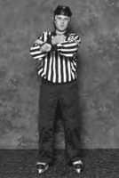(Note) Spearing is the act of poking, stabbing, or attempting to poke or stab an opponent with the tip of the blade of the stick while holding the stick with one or both hands.
(a) A major plus a game misconduct penalty shall be assessed for spearing an opponent.
(b) A match penalty for attempt to injure or deliberate injury to an opponent may also be assessed for spearing.
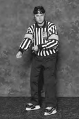(a) A minor penalty shall be assessed to any player on the ice who shoots or throws any portion of his stick or any other object in the direction of the puck.
(Note) When a player discards the broken portion of a stick by tossing it to the side of the rink (and not over the boards) in such a way as will not interfere with play or an opposing player, no penalty shall be assessed.
However, a penalty shot/optional minor penalty shall be awarded to the non-offending team if done in his defending zone. The Referee shall allow play to be completed and provided no goal is scored, the penalty shot/optional minor is awarded to the player who was fouled. If the player fouled is not readily identified, the Captain of the non-offending team shall select the player to take the penalty shot from those players who were on the ice at the time the infraction occurred.
(b) A penalty shot/optional minor penalty shall be awarded to the non-offending team anytime a player is interfered with by any object thrown or shot in his direction by a defending player or team official during a breakaway.
For the purpose of this rule a “breakaway” is defined as follows: A player who is in possession and control of the puck (see Glossary), is beyond his defending blue line with no opponent between him and the goalkeeper.
A goal shall be awarded to the non-offending team if the goalkeeper has been removed from the ice and the stick or other object is thrown or shot in the direction of the puck and prevents an obvious and imminent goal.
(c) A misconduct penalty shall be assessed to any player who throws any portion of his stick or any other object outside of the playing area. A game misconduct penalty shall be assessed if done in protest of an official’s decision or if thrown at or in the direction of a spectator.
(Note 1) Tripping is the act of placing a stick, knee, foot, arm, hand or elbow in such a manner that causes his opponent to lose balance or fall.
(Note 2) Clipping is the act of deliberately leaving the feet or lowering the body for the purpose of making contact with the opponent at or below the knees.
(Note 3) Leg check is the act of extending the leg from the front or from behind for the purpose of tripping the opponent.
(Note 4) Slew Footing is the act of a player using his leg or foot to knock or kick an opponent's feet from under him. This is done by pushing an opponent's upper body backwards with an arm or elbow at the same time using a forward motion of his leg causing the opponent to fall to the ice.
(a) A minor or major penalty shall be assessed under this rule for any of the actions described above.
(Note) However, no penalty shall be assessed under this rule if, in the opinion of the Referee, the player was clearly hook-checking or poke-checking the puck for the purpose of gaining possession.
(b) A major penalty plus a game misconduct penalty shall be assessed to any player who injures an opponent as a result of tripping, clipping, leg checking or slew footing.
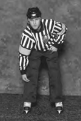(Note) Roughing shall be considered any act where a player uses unnecessary force to push or shove an opponent or makes avoidable physical contact with an opponent after the whistle.
Under this rule, a penalty for roughing should also be assessed to a player who delivers an avoidable body check to an opponent who is no longer in possession and control of the puck.
(a) A minor or double minor penalty shall be assessed to any player who is deemed guilty of unnecessary roughness (roughing).
Any action warranting a major penalty under this rule shall be assessed under Rule 615 (Fighting).
(b) A minor or major penalty shall be assessed (except Adult Male Classifications) to any player who delivers an avoidable body check to an opponent who is no longer in possession and control of the puck.
(c) A minor or major penalty shall be assessed to any player who makes avoidable physical contact with an opponent after the whistle.
(d) A major plus a game misconduct penalty shall be assessed to any player who injures an opponent as a result of an avoidable check to a player who is not in possession and control of the puck or who makes avoidable physical contact with an opponent after the whistle.